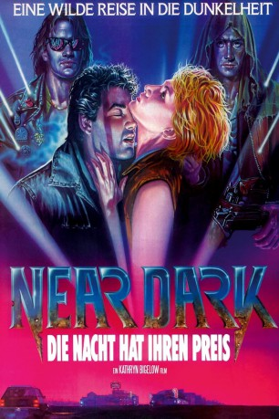
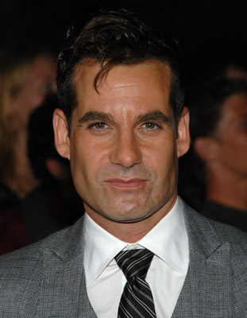
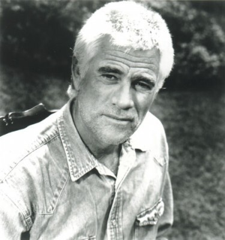
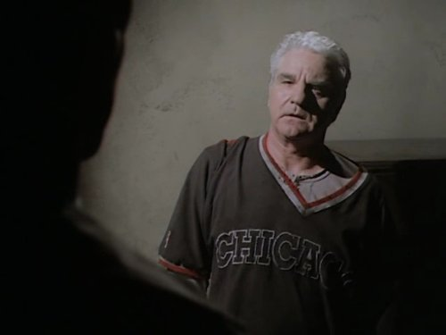
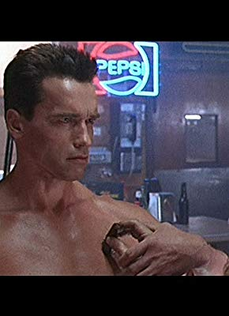

#9179 Near Dark - Die Nacht hat ihren Preis
Alternativ: Near Dark (Englischer Titel)
 
 IMDB-Wertung: 7.0 / 10
IMDB-Wertung: 7.0 / 10  Tomatometer: 88
Tomatometer: 88  Metascore: 76
Metascore: 76 
Der Farmersohn Caleb lebt mit seiner kleinen Schwester Sarah und seinem Vater Loy auf einer abgelegenen Ranch in Oklahoma. Eines Nachts begegnet er der hübschen Mae und verfällt dem unschuldig aussehendem Mädchen vom ersten Moment an. Doch es dauert nicht lange, bis die junge Dame ihre wahre Natur offenbart: Ein erster Kuss, ein tiefer Biss in den Hals und schon findet sich der verdutzte Caleb inmitten von blutsaugenden Untoten wieder. Immer auf der Suche nach neuen Opfern und auf der Flucht vor dem Sonnenlicht, zieht die Familie in einem lichtundurchlässigen Campingwagen durch das ganze Land. Mit seiner neuen Existenz als Blutsauger ist Caleb jedoch mehr als unglücklich, das nächtliche Morden für den unverzichtbaren Lebenssaft fällt ihm im Gegensatz zum Rest der Truppe äußerst schwer und so ist es nur eine Frage der Zeit, bis er mit dem charismatischen Anführer der Truppe, Jesse Hooker aneinander gerät...
Jahr: 1987
Dauer: 94 Minuten
FSK: 16
Land: USA Studio: DEGTonspuren: DD5.1 - ,
Untertitel:
Auflösung: 1080p (1920x1040) Größe: 8437 MB
Genre: Action, Thriller, Horror, Drama, Krimi, Liebe
Regisseur:  Kathryn Bigelow
Kathryn Bigelow
Drehbuch: Kathryn Bigelow, Eric Red
Soundtrack: Tangerine Dream
Darsteller:
-  Adrian Pasdar als Caleb Colton
- Jenny Wright als Mae
 Lance Henriksen als Jesse Hooker
Lance Henriksen als Jesse Hooker Bill Paxton als Severen
Bill Paxton als Severen- Jenette Goldstein als Diamondback
-  Tim Thomerson als Loy Colton
- Joshua John Miller als Homer
 Troy Evans als Plainclothes Officer
Troy Evans als Plainclothes Officer Roger Aaron Brown als Cajun Truck Driver
Roger Aaron Brown als Cajun Truck Driver-  Thomas Wagner als Bartender
-  Robert Winley als Patron in Bar
 James Le Gros als Teenage Cowboy
James Le Gros als Teenage Cowboy- Danny Kopel als Biker in Bar
 Billy Beck als Motel Manager
Billy Beck als Motel Manager S.A. Griffin als Police Officer at Motel
S.A. Griffin als Police Officer at Motel- Paul M. Lane als State Trooper
- Eddie Mulder als State Trooper
 Don Pugsley als Truck Driver #2
Don Pugsley als Truck Driver #2 Theresa Randle als Lady in Car
Theresa Randle als Lady in Car- Leo Geter als Caleb's Friend
- JR Hatchett als Supply Trucks (uncredited)
- Marcie Leeds als Sarah Colton
- Kenny Call als Deputy Sheriff
- Ed Corbett als Ticket Seller
- Bill Cross als Sheriff Eakers
- Jan King als Waitress
- Bob Terhune als State Trooper
- William T. Lane als State Trooper
- Gary Littlejohn als State Trooper
- Neith Hunter als Lady in Car
- Tony Pierce als Highway Youth
- Gordon Haight als Highway Youth
- Gary Wayne Cunningham als Caleb's Friend
- Joel Cooper als Man Crossing the Street (uncredited)
Datei: X:\1987\Near Dark - Die Nacht hat ihren Preis (1987, FSK16, 1920x1040).mkv seit 19.07.2018
Festplatte: HD 1987-1991
 Es gibt insgesamt 50 Filme in der Gruppe '1987'
Es gibt insgesamt 50 Filme in der Gruppe '1987'